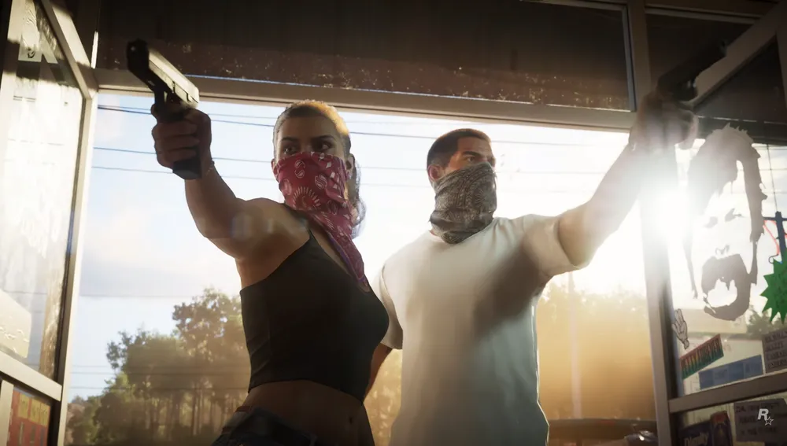
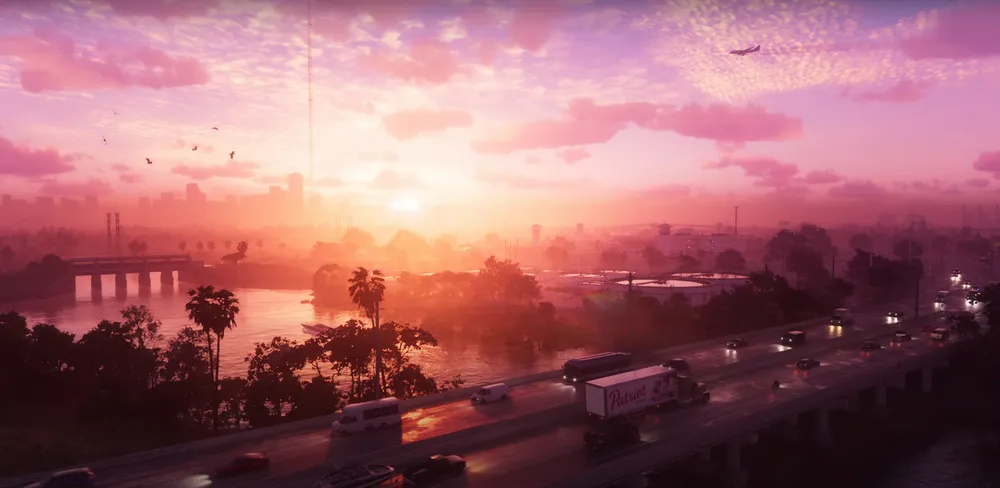

GTA 6: TUDO O QUE SABEMOS ATÉ AGORA!
Novo jogo da franquia da Rockstar Games ganhou o primeiro trailer em dezembro de 2023.
Depois de um vazamento, a Rockstar Games divulgou, o primeiro trailer do Grand Theft Auto (GTA) 6, um dos mais aguardados games dos últimos anos. Segundo anunciado pela desenvolvedora, o lançamento do GTA 6 será em 2025, em data ainda não especificada. A Rockstar informou ainda que GTA 6 será jogável no PlayStation 5 e no Xbox Series X|S.
Pouco tempo depois de o trailer vazar na internet, o estúdio norte-americano confirmou as imagens e publicou o vídeo no YouTube. Inicialmente, a divulgação estava prevista para as 11 horas (no horário de Brasília), 5 de dezembro.
ASSISTA O TRAILER
O GTA 6 contará com uma dupla de protagonistas, a latina Lucia e o companheiro dela, cujo nome será Jason, conforme vazamentos, ex-presidiários que tentam construir uma nova vida em Vice City, a cidade fictícia do jogo, inspirada em Miami, nos Estados Unidos, que já teve até um game próprio, o GTA: Vice City, de 2002.
— Grand Theft Auto VI continua nossos esforços para ultrapassar os limites do que é possível em experiências de mundo aberto altamente imersivas e baseadas em histórias. Estamos entusiasmados por poder compartilhar esta nova visão com jogadores de todo o mundo — declarou o fundador da Rockstar, Sam Houser, em comunicado à imprensa.
O trailer mostra os personagens e diversos cenários da cidade e, pelas cenas exibidas, deixa claro que a utilização de redes sociais estará presente no novo jogo.
A trilha sonora do trailer é a música "Love Is A Long Road", de Tom Petty.
O vídeo aponta que o lançamento ocorrerá em 2025, mas não especifica a data.
Em um comunicado à imprensa, a Rockstar informou que GTA 6 poderá ser jogado no PlayStation 5 e no Xbox Series X|S. Não há menção a PC.
O primeiro trailer do GTA 6 vem dez anos depois do lançamento do último jogo, o GTA 5, de 2013, que já ultrapassou a marca de 190 milhões de cópias vendidas.
Considerando toda a franquia, iniciada em 1997, com o primeiro Grand Theft Auto, são mais de 410 milhões de unidades comercializadas.